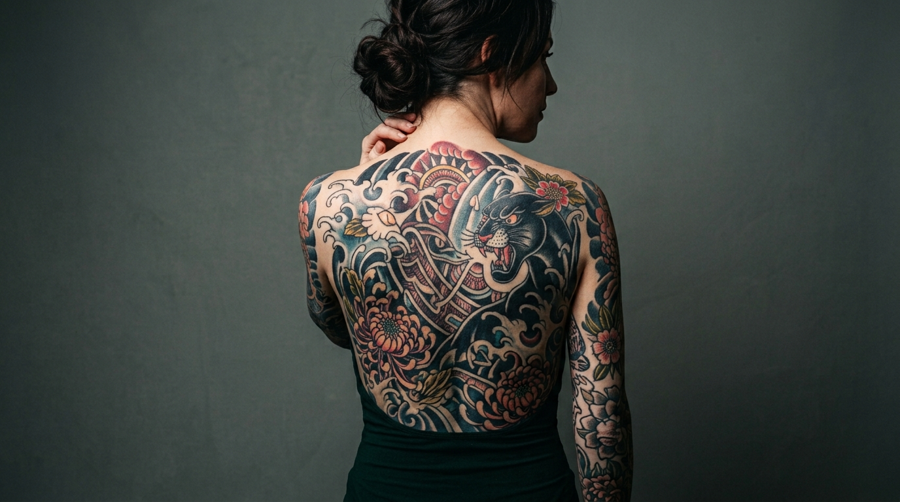

Tu historia en tinta
En Akali Tattoo convertimos tus ideas en arte sobre la piel. Somos un estudio especializado en tatuajes personalizados con más de 10 años de experiencia.
Reserva tu sesion¿Por qué elegirnos?
En Akali Tattoo, la higiene y la calidad son nuestra prioridad. Utilizamos materiales de primera calidad y seguimos los protocolos de seguridad más estrictos para garantizar una experiencia única y segura.

Nuestros Servicios
- Tatuajes personalizados (diseño único)
- Cover-up (cubrimiento de tatuajes antiguos)
- Rediseño de tatuajes existentes
- Asesoramiento de ubicación y tamaño